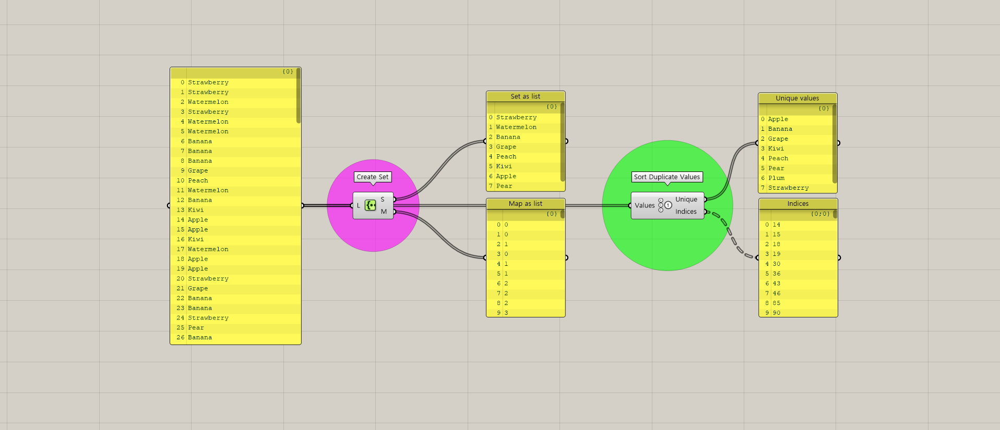

Strawberry quiz - Solution B
We will continue to look for another scipt solving earlier straberry quiz, as it named as "Straberry quiz - Solution B"
Solution B has two slightly different approach. The first one is more easy to understand, while the second one is simpler, but not easy to catch directly. Then let's firt summarise our goals and strategy again.
The goal and strategy
Firstly our goal is to sort the strawberry list by types of fruits. To achieve that goal, there are two important points that we should think ahead.
1. Which items are repaeting?
2. What is the location(path) of each repeated item?
If we know this information, it is clear that we could easily sort data. So I want to first introduce two components which does upper work.

Two components work similarly. When there are duplicated data list, it is very useful, because when we put data, it will make two outputs. For two components, first output shows repeating data item. For this list, it is strawberry, watermelon, banana, grape, peach, kiwi, apple and pear. However order of data can be different between the component. Using this component we can easily find which items are repeating.
How about second output? Both tells location of repeating data. While two output is slightly different.
1. Map as list (create set): It's rather map rather than location. Then what is map? The second output uses data of first output.
Second output change repeated value in the original list to the index of first output. In thislist, data strawberry is corresponds with value "0". As a result, all rooms for strawberry in the original list
changes into value "0" in second output.
2. Indices (sort duplicate values): This truley shows location of repeated data in the original list. The first unique value for this list is apple, and the second output {0,0} only shows indices of apple in original list.
As a result, you can see 14,15,18,19 ... for the actual data.
Now we find out key component to solve this quiz. It's time to make actual script based on our two different approaches.
Solution B-1
To begin with, let's firstly talk about shift pattern. When sorting or manipulating data, making certain patterns are very powerful and daily tool. However when we make a pattern, out final goal is to sort data using those pattern. Component shift pattern is the component which perfectly fits with that data sorting purpose. Let's look at the image below.
We have a original data, which is series of numbers, 1~9, and we have a pattern which 0,1,2 is repeated three times respectively. When you see the result, data is sorted in three numbers in a row. This is because pattern is constructed in same numbers in a row. Then how can we make a pattern for our strawberry quiz? We don't have to make pattern, as we already have it.

Do you remember output map as a list of create set? We can use those data as pattern. Each different data refer fruit type in the original list. If we put original data and use map as list as a pattern, then all of the data with same mapping number will sorted, and rest of the data will change into null. Let's see the result below.
Not all result of shift patterns are exposed, but you will get the idea. Same fruit types are shifted, and rest changed into null data. Result of shift pattern is 8 different lists of data. While we want to make a sorted list of data, we need to merge lists into one. Entwine is the data which can be used in that situation. However, entwined data will contain numerous null data also, so we should erase null data using clean trees. Finally we will have a lsit sorted by a fruit type.
This method is relatively intuitive. It's simple. Use map as list like pattern and cull the original list.
Solution B-2
Solution B-2 is less intuitive than B-1. Approach is different at first. When B-1 was to use pattern, B-2 is using actual index of original item. Then the problem is, how can we extract actual indices of each item by types of fruit? Don't worry. We already know the answer for it; sort duplicate values.
Using sort duplicate values, we can easily find out index of repeating data. However we have another option, using creat set. As we already gone through, output m of create set is mapping data not location of data. When we want to find out actual location of one item, we have to use additional component which is member index. Member index finds out index of each members. Do we know members? Yes we do! Using creat set, we got list of items that consist original data. The order is to put already found member list into member input of member index component and put existing list in to set input. As a resut, it will print out indices of members in original data.
Then what is the next step? Now we know indices of item in original data. Let's take a closer look of printed out result. The indices are alreay sorted! Then we can use that result to meet our goal. Remind our goal is to sort data into types of fruits. As index order is already sorted, what we have to do is list items(each fruit items) by our new printed out indices.
Two results are slightly different but it all fits with out goal. List items is something like a claw machine game. It picks up item which is in certain index. For now as the index was sorted in fruit types, picked up items were also sorted in particular order.
We covered two different method of sulution B solving strawberry quiz. The concept of two method was different. One was using patterns and another one was using sorted indices. As first concept was different, different steps were followed. A option using patterns, we shifted data using patterns. While a option using sorted indices, we picked up items in original data just list picking up dolls in claw machine game.
In grasshopper, numerous ways of solving numerous problems exist. So what is important is a way of logical thinking, not memorising functions of each components